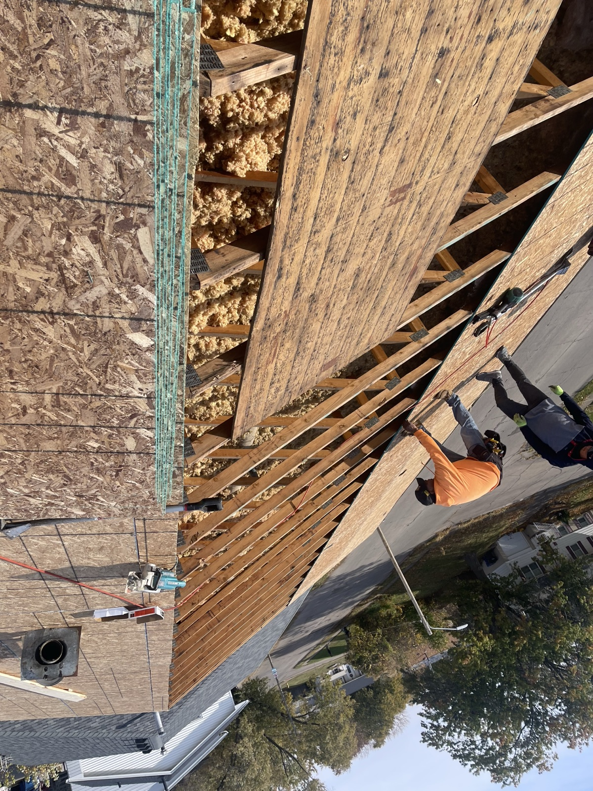

What Storm Damage Looks Like on an Iowa Roof
Storm damage on a Central Iowa roof usually shows up in four ways after a hail or wind event. Hail leaves dark bruise spots on asphalt shingles where the granules have been knocked loose, exposing the black fiberglass mat underneath. Wind lifts shingles at the edges, tears tabs off, and sometimes peels entire courses back near the ridge or eaves. Impact damage from tree limbs or debris shows as punctures, cracks, or missing sections. Water usually finds these weak spots within one or two weather cycles and starts leaking into the attic or through ceilings. If you notice any of these signs after a storm rolls through Ankeny, Des Moines, or the metro, get an inspection scheduled while the damage is fresh and easy to document for insurance.
Hail, Wind, and Impact. Every Iowa Storm Has a Signature.
- Hail damage: Dark bruise spots, exposed mat, dented soft metal on vents and flashing, extra granules in your gutters.
- Wind damage: Lifted or torn shingles, especially along the ridge, eaves, and near roof penetrations. Missing shingles blown into the yard.
- Impact damage: Punctures, cracks, or missing sections from tree limbs, siding debris, or heavy hail.
- Ice dam damage: Winter-specific. Water backs up under shingles at the eaves, rots the deck, and leaks into the interior.
- Water intrusion: Leaks appear days or weeks after the storm as ceiling stains, wet attic insulation, or a musty smell.
First 72 Hours After a Storm
If you think your roof took damage, here is what to do in order.
1. Stay Safe, Stay Off the Roof
Wet shingles are slick and storm-damaged roofs are structurally unpredictable. Do not climb up to look. Assess from the ground and call a professional.
2. Document From the Ground
Take photos of anything visible from the yard, driveway, or neighbor's angle. Shingles in the yard, dented gutters, cracked siding. Anything the storm touched.
3. Tarp If Water Is Getting In
If you have an active leak, call us and we will tarp the roof usually within 24 hours during storm season. Water damage compounds fast, tarps stop the bleeding.
4. File the Insurance Claim
Call your homeowners insurance to open a claim. Have the storm date ready. Most Iowa policies want the claim filed while the damage is fresh.
5. Do Not Sign Anything at the Door
Storm-chaser roofers show up in the days after every Iowa hail event with contracts on clipboards. Do not sign. Get local, get referenced, get inspected first.
6. Schedule a Free Inspection
We come out, walk the roof, take photos, and give you an honest report. If the damage is real and the claim is worth filing, we walk you through the rest.
We Handle the Insurance Claim, Start to Finish
Most Iowa homeowners policies cover storm damage from hail, wind, and impact when the roof was in sound condition before the storm. Your deductible still applies. Here is how the claim usually runs:
- Free inspection first: We confirm whether the damage is claim-worthy before you call the insurance company. Filing a claim on cosmetic damage is a fast way to burn a claim slot.
- Adjuster meeting on-site: We meet your insurance adjuster on the roof, walk the damage together, and make sure nothing gets missed.
- Full documentation: Photos, measurements, and a written scope go into the claim file. If the adjuster misses something, we file a supplement.
- Work approval and scope: Once your insurer approves the scope, we finalize materials, colors, and schedule.
- Payment coordination: Most claims pay in two checks, one at approval and one at completion. We coordinate directly with your insurer and mortgage company so you are not chasing paperwork.
We work for you, not the insurance company. Our goal is to make the process as stress-free as possible and get your roof restored the right way.


Your Roof Comes Back Better Than It Went Down
A storm-damage roof replacement is not a patch job. When we tear off, we inspect the deck, replace anything soft or rotted, install new synthetic underlayment, and put down premium architectural shingles or metal panels rated for Iowa weather. Then we walk it with you.
- Manufacturer warranty on materials (usually 25 to 50 years for asphalt, 40 to 70 for metal)
- Workmanship warranty from Black Ridge on top of that
- Clean job site every day, magnets run across the yard, landscaping protected
- Final walkthrough so you see what we saw
Storm Damage Roof FAQs
The questions we hear most from Central Iowa homeowners after a storm.
Hail damage on an asphalt roof usually shows up as small dark circular spots where the shingle granules have been knocked loose, exposed black fiberglass mat, and dented or bruised soft-metal fixtures like vents, flashing, and gutters. From the ground you might see extra granules in your gutters or downspouts after the storm. The safest way to confirm is a free inspection.
Most Iowa policies cover hail, wind, and impact damage when the roof was in sound condition before the storm. Your deductible still applies. We walk you through the claim process, meet with your adjuster, and document everything so you get what your policy actually owes you.
Most homeowners policies in Iowa require you to file within one year of the date of loss, though many recommend filing within 30 to 60 days while the damage is fresh. Check your policy for the exact deadline. Sooner is always better because storm-damaged shingles keep degrading with every weather cycle.
Yes. If you have an active leak or missing shingles after a storm, we come out and secure the roof with a tarp so water stops getting into your home while the insurance claim runs its course. Emergency tarping usually happens within 24 hours of your call during storm season.
Yes, most storm damage repairs and full replacements happen while you continue living in the home. Tear-off and install is loud for one to three days, and we protect landscaping and siding with tarps. Magnets run across the yard when we finish to catch stray nails.
Related Roofing Info
All Roofing Services
The full picture on our roofing work, materials, and process across Central Iowa.
Roofing in Ankeny
Storm patterns, housing stock, and permit info for Ankeny homeowners.
Roofing in Des Moines
Storm history and neighborhood-specific roofing considerations for Des Moines.